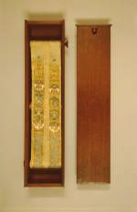

Devimahatmyam. Sanskrit. Handschrift op papier, opgerold op twee spoelen, circa 2000 x 100 mm. In houten doos. Jaypur of een van de andere centra in Noord-India, begin van de negentiende eeuw. -- (Or. 18.301)
In dit geschrift, dat in feite een
onderdeel is van het Markan
De illustraties in het handschrift zijn afbeeldingen van de godin Devi. Aan het begin
is een afbeelding van de god Ganes
Verder in de tekst staan nog twaalf afbeeldingen van Devi, waarin zij ofwel demonen verslaat, of afgebeeld wordt samen met goden of wijze brahmanen. De tekst in het handschrift lijkt compleet te zijn, wordt hier beschouwd als een aparte tekst, en niet als onderdeel van een grotere tekst, en is onderverdeeld in dertien hoofdstukken. De teksten in de linker- en rechterkolom zijn identiek en worden dus twee maal gegeven. Ook bij de illustraties is dat het geval. Het is niet duidelijk waarom dat zo gedaan is. Hadden de twee kolommen in een later stadium van elkaar gescheiden moeten worden? De kijkdoos, waarin ooit ook een glasruitje moet hebben gezeten, is hoogst waarschijnlijk geen Indiaas maaksel.
Over de miniatuurvorm en de illuminatie kan nog gezegd worden, dat deze niet hindoeïstisch van stijl zijn, maar duidelijk beïnvloed door de islamitische Moghulkunst. De rolvorm en het bijbehorende zeer kleine ‘nagri’-schrift zijn mogelijk geïnspireerd door miniatuur koranhandschriften, mystieke genealogieën en dergelijke, zoals die vanuit het islamitische Midden-Oosten India binnenkwamen. Losty verklaart de overname van stijl uit het verlangen van Hindoe boekbezitters om handschriften van hun heilige teksten te bezitten die even elegant waren uitgevoerd als de koran van de moslims.
Literatuur
- Vasudeva S. Agrawala, Devi -Mahatmyam, the glorification of the great goddess. Benares 1963.
- Jeremiah P. Losty, The art of the book in India. London 1982, p. 64, 121, 145.
| vorige pagina | top pagina |